Version 1.0.0
QuickAssetDepend is a practical tool that can track the references between assets in a project in real time, view the assets lost in the project, the same assets, and the reference replacement of assets. View the wizard information contained in SpriteAtlas, and view all SpriteAtlas bound by assets.
l The Project window displays the number of asset dependencies and reverse dependencies in real time
l The Dependent assets tab displays the dependency list and details of the selected asset
l The Reverse dependent assets tab displays the reverse dependency list and details of the selected asset
l The Missing assets tab displays the list of assets lost in the project
l The Equal assets tab displays the same asset list in the project
l The Reference replace page provides the asset reference replacement function
l Display the basic information, path, GUID, InstanceID, Sub InstanceID, Ping Object and Show in Explorer of the asset
l Draw the UV and border information of all sprites in SpriteAtlas
l Print all bound SpriteAtlas of the selected asset
1. Import Package
2. Initialize QuickAssetDepend from Window>QuickAssetDepend>Open, and ensure that the project uses ForceText serialization mode
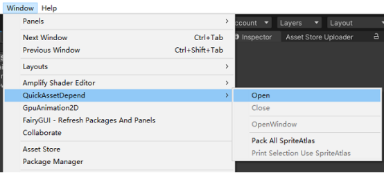
l When a project initializes QuickAssetDepend, the Project window displays the count of asset dependencies and reverse dependencies
l Click the count button to quickly go to view the details
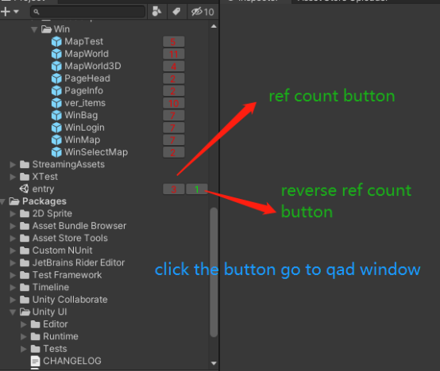
l Display the dependency list of the selected asset
l Click to view details (InstanceID, resource object name, location, and additional information)
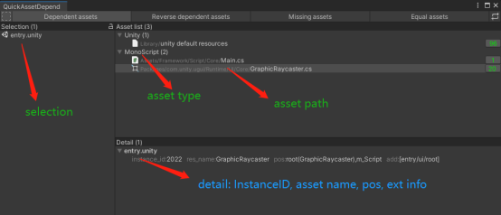
l Display the reverse dependency list of the selected asset
l Click to view details (InstanceID, resource object name, location, and additional information)
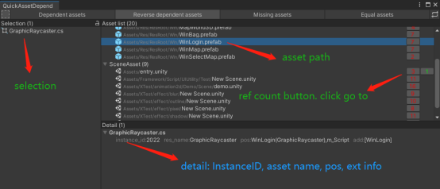
l Display the list of assets lost in the project
l Click to view details (InstanceID, resource object name, location, and additional information)
l You can repair the asset reference through the Reference replace function or manually
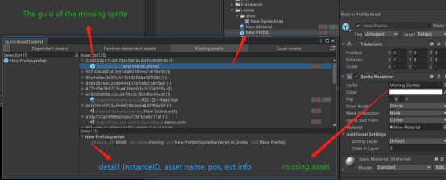
l Display the same asset list and reverse dependency count in the project
l Click to view the actual path of the asset
l You can use the Reference replace function or manually delete the asset reference. When the asset is no longer in use, you can then safely delete the redundant asset
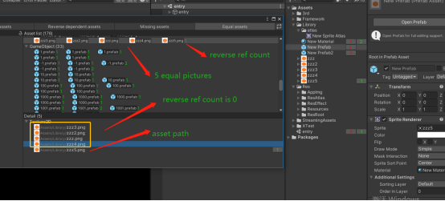
l Provide asset reference replacement function
1. Select the replacement mode, usually using InstanceID replace
2. Specify the replacement filter directory
3. Select the source asset object to replace (when the current asset does not exist, you can enter InstanceID or GUID)
4. Select the target asset object to replace (the current asset must exist)
5. Finally, click the Run button
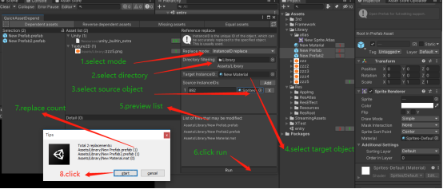
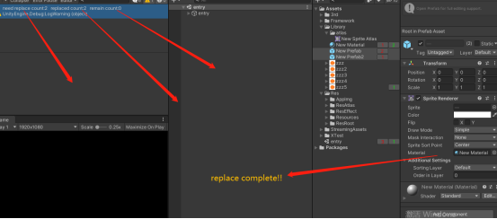
l Most interfaces provide asset information viewing function
l In the QuickAssetDepend interface, select an asset and click the right mouse button to create it
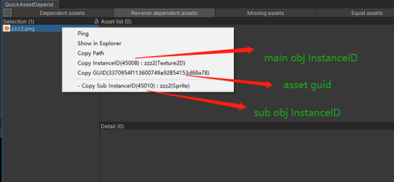
l Unchecked, no wireframe will be displayed
l Red wireframe indicates sprite UVs
l The green wireframe represents the wizard border
l Right click wireframe to display menu bar
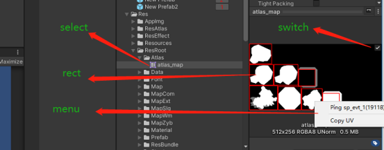
Print all bound SpriteAtlas of the selected asset
1. Select assets, which are usually used by the UGUI Image/PriteRenderer component in Prefab/Scene
2. When the project wizard changes, you need to package all atlases, click Window/QuickAssetDepend/Pack All SpriteAtlas
3. Click Window/QuickAssetDepend/Print Selection Use SpriteAtlas
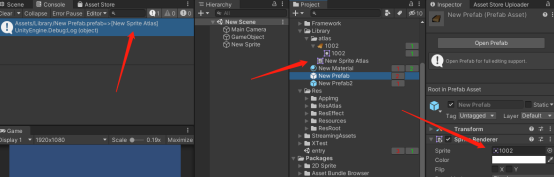